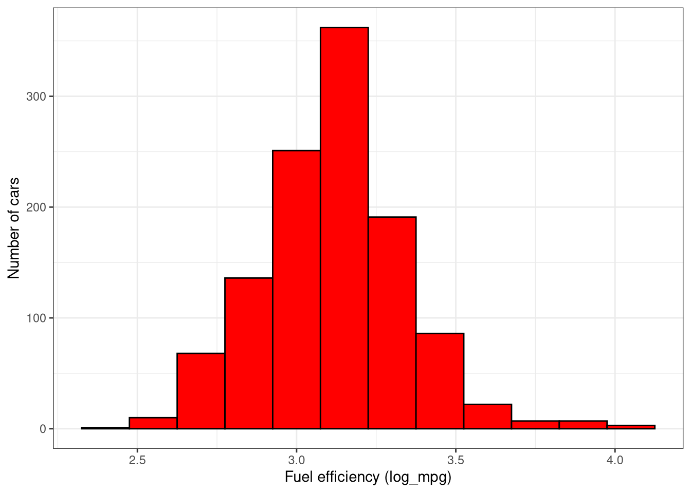
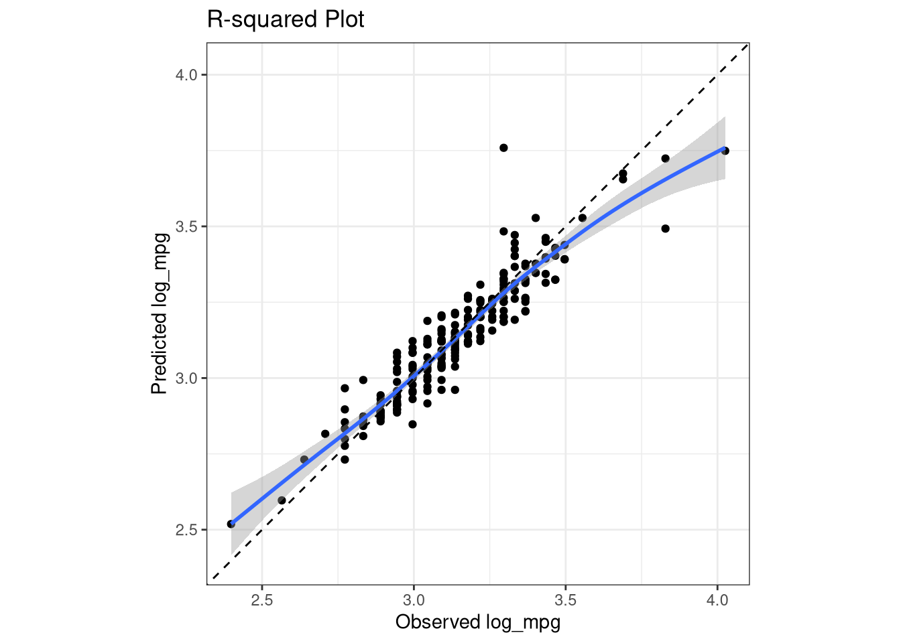

library(tidyverse)
cars2018 <- read_csv("../Data/cars2018.csv")Not mtcars AGAIN
In this first case study, you will predict fuel efficiency from a US Department of Energy data set for real cars of today.
In this case study, you will predict the fuel efficiency ⛽ of modern cars from characteristics of these cars, like transmission and engine displacement. Fuel efficiency is a numeric value that ranges smoothly from about 15 to 40 miles per gallon. To predict fuel efficiency you will build a Regression model.
Visualize the fuel efficiency distribution
The first step before you start modeling is to explore your data. In this course we’ll practice using tidyverse functions for exploratory data analysis. Start off this case study by examining your data set and visualizing the distribution of fuel efficiency. The ggplot2 package, with functions like ggplot() and geom_histogram(), is included in the tidyverse. The tidyverse metapackage is loaded for you, so you can use readr and ggplot2.
- Take a look at the
cars2018object usingglimpse().
# Print the cars2018 object
glimpse(cars2018)Rows: 1,144
Columns: 15
$ model <chr> "Acura NSX", "ALFA ROMEO 4C", "Audi R8 AWD", "…
$ model_index <dbl> 57, 410, 65, 71, 66, 72, 46, 488, 38, 278, 223…
$ displacement <dbl> 3.5, 1.8, 5.2, 5.2, 5.2, 5.2, 2.0, 3.0, 8.0, 6…
$ cylinders <dbl> 6, 4, 10, 10, 10, 10, 4, 6, 16, 8, 8, 8, 8, 8,…
$ gears <dbl> 9, 6, 7, 7, 7, 7, 6, 7, 7, 8, 8, 7, 7, 7, 7, 7…
$ transmission <chr> "Manual", "Manual", "Manual", "Manual", "Manua…
$ mpg <dbl> 21, 28, 17, 18, 17, 18, 26, 20, 11, 18, 16, 18…
$ aspiration <chr> "Turbocharged/Supercharged", "Turbocharged/Sup…
$ lockup_torque_converter <chr> "Y", "Y", "Y", "Y", "Y", "Y", "Y", "N", "Y", "…
$ drive <chr> "All Wheel Drive", "2-Wheel Drive, Rear", "All…
$ max_ethanol <dbl> 10, 10, 15, 15, 15, 15, 15, 10, 15, 10, 10, 10…
$ recommended_fuel <chr> "Premium Unleaded Required", "Premium Unleaded…
$ intake_valves_per_cyl <dbl> 2, 2, 2, 2, 2, 2, 2, 2, 2, 1, 1, 1, 1, 2, 2, 2…
$ exhaust_valves_per_cyl <dbl> 2, 2, 2, 2, 2, 2, 2, 2, 2, 1, 1, 1, 1, 2, 2, 2…
$ fuel_injection <chr> "Direct ignition", "Direct ignition", "Direct …- Use the appropriate column from
cars2018in the call toaes()so you can plot a histogram of fuel efficiency (miles per gallon, mpg). Set the correctxandylabels.
# Plot the histogram
ggplot(cars2018, aes(x = mpg)) +
geom_histogram(bins = 25, color = "black", fill = "red") +
labs(x = "Fuel efficiency (mpg)",
y = "Number of cars") +
theme_bw()# Consider using log10(mpg) instead of mpg
cars2018 <- cars2018 |>
mutate(log_mpg = log(mpg))
ggplot(cars2018, aes(x = log_mpg)) +
geom_histogram(bins = 15, color = "black", fill = "red") +
labs(x = "Fuel efficiency (log_mpg)",
y = "Number of cars") +
theme_bw()
Build a simple linear model
Before embarking on more complex machine learning models, it’s a good idea to build the simplest possible model to get an idea of what is going on. In this case, that means fitting a simple linear model using base R’s lm() function.
Instructions
- Use
select()to deselect the two columnsmodelandmodel_indexfromcars2018; these columns tell us the individual identifiers for each car and it would not make sense to include them in modeling. Store the results incar_vars.
# Deselect the 2 columns to create cars_vars
car_vars <- cars2018 |>
select(-model, -model_index)- Fit
mpgas the predicted quantity, explained by all the predictors, i.e.,.in the R formula input tolm(). Store the linear model object infit_all. (You may have noticed the log distribution of MPG in the last exercise, but don’t worry about fitting the logarithm of fuel efficiency yet.)
# Fit a linear model
fit_all <- lm(mpg ~ . - log_mpg, data = car_vars)- Print the
summary()of themodelfit_all`.
# Print the summary of the model
summary(fit_all)
Call:
lm(formula = mpg ~ . - log_mpg, data = car_vars)
Residuals:
Min 1Q Median 3Q Max
-8.5261 -1.6473 -0.1096 1.3572 26.5045
Coefficients:
Estimate Std. Error t value
(Intercept) 44.539519 1.176283 37.865
displacement -3.786147 0.264845 -14.296
cylinders 0.520284 0.161802 3.216
gears 0.157674 0.069984 2.253
transmissionCVT 4.877637 0.404051 12.072
transmissionManual -1.074608 0.366075 -2.935
aspirationTurbocharged/Supercharged -2.190248 0.267559 -8.186
lockup_torque_converterY -2.624494 0.381252 -6.884
drive2-Wheel Drive, Rear -2.676716 0.291044 -9.197
drive4-Wheel Drive -3.397532 0.335147 -10.137
driveAll Wheel Drive -2.941084 0.257174 -11.436
max_ethanol -0.007377 0.005898 -1.251
recommended_fuelPremium Unleaded Required -0.403935 0.262413 -1.539
recommended_fuelRegular Unleaded Recommended -0.996343 0.272495 -3.656
intake_valves_per_cyl -1.446107 1.620575 -0.892
exhaust_valves_per_cyl -2.469747 1.547748 -1.596
fuel_injectionMultipoint/sequential ignition -0.658428 0.243819 -2.700
Pr(>|t|)
(Intercept) < 2e-16 ***
displacement < 2e-16 ***
cylinders 0.001339 **
gears 0.024450 *
transmissionCVT < 2e-16 ***
transmissionManual 0.003398 **
aspirationTurbocharged/Supercharged 7.24e-16 ***
lockup_torque_converterY 9.65e-12 ***
drive2-Wheel Drive, Rear < 2e-16 ***
drive4-Wheel Drive < 2e-16 ***
driveAll Wheel Drive < 2e-16 ***
max_ethanol 0.211265
recommended_fuelPremium Unleaded Required 0.124010
recommended_fuelRegular Unleaded Recommended 0.000268 ***
intake_valves_per_cyl 0.372400
exhaust_valves_per_cyl 0.110835
fuel_injectionMultipoint/sequential ignition 0.007028 **
---
Signif. codes: 0 '***' 0.001 '**' 0.01 '*' 0.05 '.' 0.1 ' ' 1
Residual standard error: 2.916 on 1127 degrees of freedom
Multiple R-squared: 0.7314, Adjusted R-squared: 0.7276
F-statistic: 191.8 on 16 and 1127 DF, p-value: < 2.2e-16# Better yet
broom::tidy(fit_all) |>
knitr::kable()| term | estimate | std.error | statistic | p.value |
|---|---|---|---|---|
| (Intercept) | 44.5395187 | 1.1762833 | 37.8646201 | 0.0000000 |
| displacement | -3.7861470 | 0.2648450 | -14.2957074 | 0.0000000 |
| cylinders | 0.5202836 | 0.1618015 | 3.2155668 | 0.0013389 |
| gears | 0.1576744 | 0.0699836 | 2.2530183 | 0.0244497 |
| transmissionCVT | 4.8776374 | 0.4040514 | 12.0718250 | 0.0000000 |
| transmissionManual | -1.0746077 | 0.3660748 | -2.9354869 | 0.0033978 |
| aspirationTurbocharged/Supercharged | -2.1902481 | 0.2675589 | -8.1860399 | 0.0000000 |
| lockup_torque_converterY | -2.6244942 | 0.3812516 | -6.8838898 | 0.0000000 |
| drive2-Wheel Drive, Rear | -2.6767162 | 0.2910442 | -9.1969408 | 0.0000000 |
| drive4-Wheel Drive | -3.3975319 | 0.3351470 | -10.1374366 | 0.0000000 |
| driveAll Wheel Drive | -2.9410836 | 0.2571744 | -11.4361445 | 0.0000000 |
| max_ethanol | -0.0073774 | 0.0058981 | -1.2508063 | 0.2112648 |
| recommended_fuelPremium Unleaded Required | -0.4039345 | 0.2624128 | -1.5393093 | 0.1240095 |
| recommended_fuelRegular Unleaded Recommended | -0.9963428 | 0.2724946 | -3.6563764 | 0.0002676 |
| intake_valves_per_cyl | -1.4461074 | 1.6205748 | -0.8923423 | 0.3724000 |
| exhaust_valves_per_cyl | -2.4697466 | 1.5477481 | -1.5957032 | 0.1108354 |
| fuel_injectionMultipoint/sequential ignition | -0.6584282 | 0.2438186 | -2.7004839 | 0.0070276 |
# and
broom::glance(fit_all) |>
knitr::kable()| r.squared | adj.r.squared | sigma | statistic | p.value | df | logLik | AIC | BIC | deviance | df.residual | nobs |
|---|---|---|---|---|---|---|---|---|---|---|---|
| 0.7313934 | 0.72758 | 2.915576 | 191.7955 | 0 | 16 | -2838.859 | 5713.718 | 5804.479 | 9580.16 | 1127 | 1144 |
You just performed some exploratory data analysis and built a simple linear model using base R’s lm() function.
Getting started with tidymodels
Training and testing data
Training models based on all of your data at once is typically not a good choice. 🚫 Instead, you can create subsets of your data that you use for different purposes, such as training your model and then testing your model.
Creating training/testing splits reduces overfitting. When you evaluate your model on data that it was not trained on, you get a better estimate of how it will perform on new data.
Instructions
- Load the
tidymodelsmetapackage, which also includesdplyrfor data manipulation.
# Load tidymodels
library(tidymodels)- Create a data split that divides the original data into 80%/20% sections and (roughly) evenly divides the partitions between the different types of
transmission. Assign the 80% partition tocar_trainand the 20% partition tocar_test.
# Split the data into training and test sets
set.seed(1234)
car_split <- car_vars |>
select(-mpg) |>
initial_split(prop = 0.8, strata = transmission)
car_train <- training(car_split)
car_test <- testing(car_split)
glimpse(car_train)Rows: 915
Columns: 13
$ displacement <dbl> 6.2, 6.2, 1.4, 2.0, 2.0, 3.0, 3.0, 3.0, 3.0, 3…
$ cylinders <dbl> 8, 8, 4, 4, 4, 6, 6, 6, 6, 6, 4, 8, 6, 8, 6, 6…
$ gears <dbl> 8, 8, 6, 8, 8, 8, 8, 8, 8, 8, 6, 7, 9, 9, 7, 7…
$ transmission <chr> "Automatic", "Automatic", "Automatic", "Automa…
$ aspiration <chr> "Naturally Aspirated", "Turbocharged/Superchar…
$ lockup_torque_converter <chr> "Y", "Y", "Y", "Y", "Y", "Y", "Y", "Y", "Y", "…
$ drive <chr> "2-Wheel Drive, Rear", "2-Wheel Drive, Rear", …
$ max_ethanol <dbl> 10, 10, 10, 15, 15, 15, 15, 15, 15, 15, 10, 10…
$ recommended_fuel <chr> "Premium Unleaded Required", "Premium Unleaded…
$ intake_valves_per_cyl <dbl> 1, 1, 2, 2, 2, 2, 2, 2, 2, 2, 2, 2, 2, 2, 2, 2…
$ exhaust_valves_per_cyl <dbl> 1, 1, 2, 2, 2, 2, 2, 2, 2, 2, 2, 2, 2, 2, 2, 2…
$ fuel_injection <chr> "Direct ignition", "Direct ignition", "Multipo…
$ log_mpg <dbl> 2.890372, 2.772589, 3.367296, 3.258097, 3.2580…glimpse(car_test)Rows: 229
Columns: 13
$ displacement <dbl> 8.0, 6.2, 3.9, 6.5, 3.0, 5.0, 5.0, 2.0, 4.0, 4…
$ cylinders <dbl> 16, 8, 8, 12, 6, 8, 8, 4, 8, 8, 12, 6, 4, 4, 6…
$ gears <dbl> 7, 7, 7, 7, 8, 8, 8, 6, 7, 7, 7, 9, 9, 6, 7, 7…
$ transmission <chr> "Manual", "Manual", "Manual", "Manual", "Autom…
$ aspiration <chr> "Turbocharged/Supercharged", "Naturally Aspira…
$ lockup_torque_converter <chr> "Y", "N", "N", "N", "Y", "Y", "Y", "N", "Y", "…
$ drive <chr> "All Wheel Drive", "2-Wheel Drive, Rear", "2-W…
$ max_ethanol <dbl> 15, 10, 10, 10, 15, 15, 15, 10, 10, 10, 10, 10…
$ recommended_fuel <chr> "Premium Unleaded Required", "Premium Unleaded…
$ intake_valves_per_cyl <dbl> 2, 1, 2, 2, 2, 2, 2, 2, 2, 2, 2, 2, 2, 2, 2, 2…
$ exhaust_valves_per_cyl <dbl> 2, 1, 2, 2, 2, 2, 2, 2, 2, 2, 1, 2, 2, 2, 2, 2…
$ fuel_injection <chr> "Multipoint/sequential ignition", "Direct igni…
$ log_mpg <dbl> 2.397895, 2.944439, 2.890372, 2.564949, 3.1354…Train models with tidymodels
Now that your car_train data is ready, you can fit a set of models with tidymodels. When we model data, we deal with model type (such as linear regression or random forest), mode (regression or classification), and model engine (how the models are actually fit). In tidymodels, we capture that modeling information in a model specification, so setting up your model specification can be a good place to start. In these exercises, fit one linear regression model and one random forest model, without any resampling of your data.
Instructions
- Fit a basic linear regression model to your
car_traindata. (Notice that we are fitting tolog(mpg)since the fuel efficiency had a log normal distribution.)
# Build a linear regression model specification
lm_spec <- linear_reg() |>
set_engine("lm")
# Train a linear regression model
fit_lm <- lm_spec |>
fit(log_mpg ~ ., data = car_train)
# Print the model object
broom::tidy(fit_lm) |>
knitr::kable()| term | estimate | std.error | statistic | p.value |
|---|---|---|---|---|
| (Intercept) | 4.0058963 | 0.0456229 | 87.804508 | 0.0000000 |
| displacement | -0.1591673 | 0.0101472 | -15.685813 | 0.0000000 |
| cylinders | 0.0092052 | 0.0062212 | 1.479654 | 0.1393162 |
| gears | 0.0115071 | 0.0027283 | 4.217720 | 0.0000272 |
| transmissionCVT | 0.1612901 | 0.0158513 | 10.175223 | 0.0000000 |
| transmissionManual | -0.0274861 | 0.0142674 | -1.926491 | 0.0543584 |
| aspirationTurbocharged/Supercharged | -0.0984454 | 0.0104909 | -9.383906 | 0.0000000 |
| lockup_torque_converterY | -0.0740208 | 0.0149250 | -4.959510 | 0.0000008 |
| drive2-Wheel Drive, Rear | -0.0855545 | 0.0113160 | -7.560472 | 0.0000000 |
| drive4-Wheel Drive | -0.1273189 | 0.0130941 | -9.723398 | 0.0000000 |
| driveAll Wheel Drive | -0.1058523 | 0.0102251 | -10.352212 | 0.0000000 |
| max_ethanol | -0.0002975 | 0.0002248 | -1.323348 | 0.1860565 |
| recommended_fuelPremium Unleaded Required | -0.0163239 | 0.0102396 | -1.594199 | 0.1112432 |
| recommended_fuelRegular Unleaded Recommended | -0.0434804 | 0.0107403 | -4.048329 | 0.0000560 |
| intake_valves_per_cyl | -0.0788364 | 0.0647617 | -1.217331 | 0.2237981 |
| exhaust_valves_per_cyl | -0.0831906 | 0.0619699 | -1.342435 | 0.1797942 |
| fuel_injectionMultipoint/sequential ignition | -0.0331051 | 0.0094613 | -3.498991 | 0.0004900 |
# and
broom::glance(fit_lm) |>
knitr::kable()| r.squared | adj.r.squared | sigma | statistic | p.value | df | logLik | AIC | BIC | deviance | df.residual | nobs |
|---|---|---|---|---|---|---|---|---|---|---|---|
| 0.8061189 | 0.8026644 | 0.1014553 | 233.3565 | 0 | 16 | 803.8961 | -1571.792 | -1485.052 | 9.243282 | 898 | 915 |
- Fit a random forest model to your
car_traindata.
# Build a random forest model specification
rf_spec <- rand_forest() |>
set_engine("ranger") |>
set_mode("regression")
# Train a random forest model
fit_rf <- rf_spec |>
fit(log_mpg ~ ., data = car_train)
# Print the model object
fit_rfparsnip model object
Ranger result
Call:
ranger::ranger(x = maybe_data_frame(x), y = y, num.threads = 1, verbose = FALSE, seed = sample.int(10^5, 1))
Type: Regression
Number of trees: 500
Sample size: 915
Number of independent variables: 12
Mtry: 3
Target node size: 5
Variable importance mode: none
Splitrule: variance
OOB prediction error (MSE): 0.007038903
R squared (OOB): 0.8650538 Evaluate model performance
The fit_lm and fit_rf models you just trained are in your environment. It’s time to see how they did! 🤩 How are we doing do this, though?! 🤔 There are several things to consider, including both what metrics and what data to use.
For regression models, we will focus on evaluating using the root mean squared error metric. This quantity is measured in the same units as the original data (log of miles per gallon, in our case). Lower values indicate a better fit to the data. It’s not too hard to calculate root mean squared error manually, but the yardstick package offers convenient functions for this and many other model performance metrics.
Instructions
Note: The yardstick package is loaded since it is one of the packages in tidyverse.
- Create new columns for model predictions from each of the models you have trained, first linear regression and then random forest.
# Create the new columns
results <- car_train |>
bind_cols(predict(fit_lm, car_train) |>
rename(.pred_lm = .pred)) |>
bind_cols(predict(fit_rf, car_train) |>
rename(.pred_rf = .pred))
head(results) |>
knitr::kable()| displacement | cylinders | gears | transmission | aspiration | lockup_torque_converter | drive | max_ethanol | recommended_fuel | intake_valves_per_cyl | exhaust_valves_per_cyl | fuel_injection | log_mpg | .pred_lm | .pred_rf |
|---|---|---|---|---|---|---|---|---|---|---|---|---|---|---|
| 6.2 | 8 | 8 | Automatic | Naturally Aspirated | Y | 2-Wheel Drive, Rear | 10 | Premium Unleaded Required | 1 | 1 | Direct ignition | 2.890372 | 2.843856 | 2.868826 |
| 6.2 | 8 | 8 | Automatic | Turbocharged/Supercharged | Y | 2-Wheel Drive, Rear | 10 | Premium Unleaded Required | 1 | 1 | Direct ignition | 2.772589 | 2.745411 | 2.821072 |
| 1.4 | 4 | 6 | Automatic | Turbocharged/Supercharged | Y | 2-Wheel Drive, Rear | 10 | Premium Unleaded Recommended | 2 | 2 | Multipoint/sequential ignition | 3.367296 | 3.270770 | 3.317601 |
| 2.0 | 4 | 8 | Automatic | Turbocharged/Supercharged | Y | 2-Wheel Drive, Rear | 15 | Premium Unleaded Recommended | 2 | 2 | Direct ignition | 3.258097 | 3.229902 | 3.254968 |
| 2.0 | 4 | 8 | Automatic | Turbocharged/Supercharged | Y | 2-Wheel Drive, Rear | 15 | Premium Unleaded Recommended | 2 | 2 | Direct ignition | 3.258097 | 3.229902 | 3.254968 |
| 3.0 | 6 | 8 | Automatic | Turbocharged/Supercharged | Y | 2-Wheel Drive, Rear | 15 | Premium Unleaded Recommended | 2 | 2 | Direct ignition | 3.135494 | 3.089145 | 3.089431 |
- Evaluate the performance of these models using
metrics()by specifying the column that contains the real fuel efficiency.
# Evaluate the performance
metrics(results, truth = log_mpg, estimate = .pred_lm)# A tibble: 3 × 3
.metric .estimator .estimate
<chr> <chr> <dbl>
1 rmse standard 0.101
2 rsq standard 0.806
3 mae standard 0.0747metrics(results, truth = log_mpg, estimate = .pred_rf)# A tibble: 3 × 3
.metric .estimator .estimate
<chr> <chr> <dbl>
1 rmse standard 0.0682
2 rsq standard 0.914
3 mae standard 0.0494Use the testing data
“But wait!†you say, because you have been paying attention. 🤔 “That is how these models perform on the training data, the data that we used to build these models in the first place.†This is not a good idea because when you evaluate on the same data you used to train a model, the performance you estimate is too optimistic.
Let’s evaluate how these simple models perform on the testing data instead.
# Create the new columns
results <- car_test |>
bind_cols(predict(fit_lm, car_test) |>
rename(.pred_lm = .pred)) |>
bind_cols(predict(fit_rf, car_test) |>
rename(.pred_rf = .pred))
# Evaluate the performance
metrics(results, truth = log_mpg, estimate = .pred_lm)# A tibble: 3 × 3
.metric .estimator .estimate
<chr> <chr> <dbl>
1 rmse standard 0.0969
2 rsq standard 0.804
3 mae standard 0.0727metrics(results, truth = log_mpg, estimate = .pred_rf)# A tibble: 3 × 3
.metric .estimator .estimate
<chr> <chr> <dbl>
1 rmse standard 0.0792
2 rsq standard 0.874
3 mae standard 0.0584You just trained models one time on the whole training set and then evaluated them on the testing set. Statisticians have come up with a slew of approaches to evaluate models in better ways than this; many important ones fall under the category of resampling.
The idea of resampling is to create simulated data sets that can be used to estimate the performance of your model, say, because you want to compare models. You can create these resampled data sets instead of using either your training set (which can give overly optimistic results, especially for powerful ML algorithms) or your testing set (which is extremely valuable and can only be used once or at most twice).
The first resampling approach we’re going to try in this course is called the bootstrap. Bootstrap resampling means drawing with replacement from our original dataset and then fitting on that dataset.
Let’s think about…cars! 🚗🚌🚙🚕
Bootstrap resampling
In the last set of exercises, you trained linear regression and random forest models without any resampling. Resampling can help us evaluate our machine learning models more accurately.
Let’s try bootstrap resampling, which means creating data sets the same size as the original one by randomly drawing with replacement from the original. In tidymodels, the default behavior for bootstrapping is 25 resamplings, but you can change this using the times argument in bootstraps() if desired.
Instructions
- Create bootstrap resamples to evaluate these models. The function to create this kind of resample is
bootstraps().
## Create bootstrap resamples
set.seed(444)
car_boot <- bootstraps(data = car_train, times = 25)- Evaluate both kinds of models, the linear regression model and the random forest model.
# Evaluate the models with bootstrap resampling
lm_res <- lm_spec |>
fit_resamples(
log_mpg ~ .,
resamples = car_boot,
control = control_resamples(save_pred = TRUE)
)
rf_res <- rf_spec |>
fit_resamples(
log_mpg ~ .,
resamples = car_boot,
control = control_resamples(save_pred = TRUE)
)Plot modeling results
You just trained models on bootstrap resamples of the training set and now have the results in lm_res and rf_res. These results are available in your environment, trained using the training set. Now let’s compare them.
Notice in this code how we use bind_rows() from dplyr to combine the results from both models, along with collect_predictions() to obtain and format predictions from each resample.
- First use
collect_predictions()for the linear model. Then usecollect_predictions()for the random forest model.
results <- bind_rows(lm_res |>
collect_predictions() |>
mutate(model = "lm"),
rf_res |>
collect_predictions() |>
mutate(model = "rf"))
glimpse(results)Rows: 16,798
Columns: 6
$ .pred <dbl> 2.849282, 3.256256, 3.235188, 3.235188, 3.065159, 3.083629, 3.…
$ id <chr> "Bootstrap01", "Bootstrap01", "Bootstrap01", "Bootstrap01", "B…
$ .row <int> 1, 3, 4, 5, 8, 9, 13, 18, 20, 22, 23, 27, 33, 34, 37, 42, 45, …
$ log_mpg <dbl> 2.890372, 3.367296, 3.258097, 3.258097, 3.044522, 3.091042, 3.…
$ .config <chr> "Preprocessor1_Model1", "Preprocessor1_Model1", "Preprocessor1…
$ model <chr> "lm", "lm", "lm", "lm", "lm", "lm", "lm", "lm", "lm", "lm", "l…- Show the bootstrapped results:
results |>
group_by(model) |>
metrics(truth = log_mpg, estimate = .pred) |>
knitr::kable()| model | .metric | .estimator | .estimate |
|---|---|---|---|
| lm | rmse | standard | 0.1044851 |
| rf | rmse | standard | 0.0885234 |
| lm | rsq | standard | 0.7914479 |
| rf | rsq | standard | 0.8522723 |
| lm | mae | standard | 0.0778044 |
| rf | mae | standard | 0.0636667 |
- Visualize the results:
results |>
ggplot(aes(x = log_mpg, y = .pred)) +
geom_abline(lty = "dashed", color = "gray50") +
geom_point(aes(color = id), size = 1.5, alpha = 0.1, show.legend = FALSE) +
geom_smooth(method = "lm") +
facet_wrap(~ model) +
coord_obs_pred() +
theme_bw() +
labs(y = "Predicted (log_mpg)",
x = "Actual (log_mpg)")Tune the Random Forest model
# Build a random forest model specification
rf_spec <- rand_forest(mtry = tune(),
min_n = tune(),
trees = 1000) |>
set_engine("ranger", importance = "impurity") |>
set_mode("regression")
rf_specRandom Forest Model Specification (regression)
Main Arguments:
mtry = tune()
trees = 1000
min_n = tune()
Engine-Specific Arguments:
importance = impurity
Computational engine: ranger Cross Validation
set.seed(42)
car_folds <- vfold_cv(car_train, v = 10, repeats = 5)rf_recipe <- recipe(log_mpg ~., data = car_train)
rf_wkfl <- workflow() |>
add_recipe(rf_recipe) |>
add_model(rf_spec)
rf_wkfl══ Workflow ════════════════════════════════════════════════════════════════════
Preprocessor: Recipe
Model: rand_forest()
── Preprocessor ────────────────────────────────────────────────────────────────
0 Recipe Steps
── Model ───────────────────────────────────────────────────────────────────────
Random Forest Model Specification (regression)
Main Arguments:
mtry = tune()
trees = 1000
min_n = tune()
Engine-Specific Arguments:
importance = impurity
Computational engine: ranger Tune the model
Tip
The next code chunk will take 20 minutes or so to run. Make sure to cache the chunk so that you can rebuild your document without having the code chunk run each time the document is rendered.
doParallel::registerDoParallel()
set.seed(321)
rf_tune <- tune_grid(rf_wkfl, resample = car_folds, grid = 15)
rf_tune# Tuning results
# 10-fold cross-validation repeated 5 times
# A tibble: 50 × 5
splits id id2 .metrics .notes
<list> <chr> <chr> <list> <list>
1 <split [823/92]> Repeat1 Fold01 <tibble [30 × 6]> <tibble [0 × 3]>
2 <split [823/92]> Repeat1 Fold02 <tibble [30 × 6]> <tibble [0 × 3]>
3 <split [823/92]> Repeat1 Fold03 <tibble [30 × 6]> <tibble [0 × 3]>
4 <split [823/92]> Repeat1 Fold04 <tibble [30 × 6]> <tibble [0 × 3]>
5 <split [823/92]> Repeat1 Fold05 <tibble [30 × 6]> <tibble [0 × 3]>
6 <split [824/91]> Repeat1 Fold06 <tibble [30 × 6]> <tibble [0 × 3]>
7 <split [824/91]> Repeat1 Fold07 <tibble [30 × 6]> <tibble [0 × 3]>
8 <split [824/91]> Repeat1 Fold08 <tibble [30 × 6]> <tibble [0 × 3]>
9 <split [824/91]> Repeat1 Fold09 <tibble [30 × 6]> <tibble [0 × 3]>
10 <split [824/91]> Repeat1 Fold10 <tibble [30 × 6]> <tibble [0 × 3]>
# ℹ 40 more rowsshow_best(rf_tune, metric = "rmse")# A tibble: 5 × 8
mtry min_n .metric .estimator mean n std_err .config
<int> <int> <chr> <chr> <dbl> <int> <dbl> <chr>
1 6 4 rmse standard 0.0802 50 0.00137 Preprocessor1_Model09
2 10 7 rmse standard 0.0818 50 0.00138 Preprocessor1_Model13
3 3 2 rmse standard 0.0836 50 0.00134 Preprocessor1_Model05
4 7 15 rmse standard 0.0857 50 0.00137 Preprocessor1_Model10
5 3 12 rmse standard 0.0875 50 0.00134 Preprocessor1_Model06# rf_param <- tibble(mtry = 6, min_n = 2)
rf_param <- select_best(rf_tune, metric = "rmse")
rf_param# A tibble: 1 × 3
mtry min_n .config
<int> <int> <chr>
1 6 4 Preprocessor1_Model09final_rf_wkfl <- rf_wkfl |>
finalize_workflow(rf_param)
final_rf_wkfl══ Workflow ════════════════════════════════════════════════════════════════════
Preprocessor: Recipe
Model: rand_forest()
── Preprocessor ────────────────────────────────────────────────────────────────
0 Recipe Steps
── Model ───────────────────────────────────────────────────────────────────────
Random Forest Model Specification (regression)
Main Arguments:
mtry = 6
trees = 1000
min_n = 4
Engine-Specific Arguments:
importance = impurity
Computational engine: ranger final_rf_fit <- final_rf_wkfl |>
fit(car_train)
augment(final_rf_fit, new_data = car_test) |>
metrics(truth = log_mpg, estimate = .pred) -> RF
RF |>
knitr::kable()| .metric | .estimator | .estimate |
|---|---|---|
| rmse | standard | 0.0788800 |
| rsq | standard | 0.8705285 |
| mae | standard | 0.0563864 |
# Variable importance plot
vip::vip(final_rf_fit) +
theme_bw()
# R-squared plot
augment(final_rf_fit, new_data = car_test) |>
ggplot(aes(x = log_mpg, y = .pred)) +
geom_point() +
geom_abline(lty = "dashed") +
coord_obs_pred() +
theme_bw() +
labs(x = "Observed log_mpg",
y = "Predicted log_mpg",
title = "R-squared Plot")Using Boosting
xgboost_spec <-
boost_tree(trees = tune(), min_n = tune(), tree_depth = tune(),
learn_rate = tune(), loss_reduction = tune(),
sample_size = tune()) |>
set_mode("regression") |>
set_engine("xgboost")
xgboost_specBoosted Tree Model Specification (regression)
Main Arguments:
trees = tune()
min_n = tune()
tree_depth = tune()
learn_rate = tune()
loss_reduction = tune()
sample_size = tune()
Computational engine: xgboost xgboost_recipe <-
recipe(formula = log_mpg ~ . , data = car_train) |>
step_dummy(all_nominal_predictors(), one_hot = TRUE) |>
step_zv(all_predictors()) |>
step_normalize(all_numeric_predictors()) |>
step_corr(all_numeric_predictors(), threshold = 0.9)xgboost_workflow <-
workflow() |>
add_recipe(xgboost_recipe) |>
add_model(xgboost_spec)
xgboost_workflow══ Workflow ════════════════════════════════════════════════════════════════════
Preprocessor: Recipe
Model: boost_tree()
── Preprocessor ────────────────────────────────────────────────────────────────
4 Recipe Steps
• step_dummy()
• step_zv()
• step_normalize()
• step_corr()
── Model ───────────────────────────────────────────────────────────────────────
Boosted Tree Model Specification (regression)
Main Arguments:
trees = tune()
min_n = tune()
tree_depth = tune()
learn_rate = tune()
loss_reduction = tune()
sample_size = tune()
Computational engine: xgboost
Tip
Use cache: true as the next chunk takes almost an hour
library(finetune)
set.seed(49)
xgboost_tune <-
tune_race_anova(xgboost_workflow, resamples = car_folds, grid = 15)
xgboost_tune# Tuning results
# 10-fold cross-validation repeated 5 times
# A tibble: 50 × 6
splits id id2 .order .metrics .notes
<list> <chr> <chr> <int> <list> <list>
1 <split [823/92]> Repeat1 Fold03 3 <tibble [30 × 10]> <tibble [1 × 3]>
2 <split [823/92]> Repeat1 Fold05 1 <tibble [30 × 10]> <tibble [2 × 3]>
3 <split [824/91]> Repeat1 Fold08 2 <tibble [30 × 10]> <tibble [1 × 3]>
4 <split [824/91]> Repeat1 Fold07 4 <tibble [12 × 10]> <tibble [0 × 3]>
5 <split [824/91]> Repeat1 Fold06 5 <tibble [6 × 10]> <tibble [0 × 3]>
6 <split [823/92]> Repeat1 Fold01 6 <tibble [4 × 10]> <tibble [0 × 3]>
7 <split [823/92]> Repeat1 Fold02 7 <tibble [4 × 10]> <tibble [0 × 3]>
8 <split [824/91]> Repeat1 Fold09 8 <tibble [4 × 10]> <tibble [0 × 3]>
9 <split [823/92]> Repeat1 Fold04 9 <tibble [4 × 10]> <tibble [0 × 3]>
10 <split [824/91]> Repeat1 Fold10 10 <tibble [4 × 10]> <tibble [0 × 3]>
# ℹ 40 more rows
There were issues with some computations:
- Warning(s) x4: A correlation computation is required, but `estimate` is constant...
Run `show_notes(.Last.tune.result)` for more information.show_best(xgboost_tune, metric = "rmse")# A tibble: 1 × 12
trees min_n tree_depth learn_rate loss_reduction sample_size .metric
<int> <int> <int> <dbl> <dbl> <dbl> <chr>
1 1714 7 14 0.0405 0.0000000291 0.743 rmse
# ℹ 5 more variables: .estimator <chr>, mean <dbl>, n <int>, std_err <dbl>,
# .config <chr># xgboost_param <- tibble(trees = 2000,
# min_n = 9,
# tree_depth = 6,
# learn_rate = 0.00681,
# loss_reduction = 0.0000000155,
# sample_size = 0.771)
xgboost_param <- select_best(xgboost_tune)
final_xgboost_wkfl <- xgboost_workflow |>
finalize_workflow(xgboost_param)
final_xgboost_wkfl══ Workflow ════════════════════════════════════════════════════════════════════
Preprocessor: Recipe
Model: boost_tree()
── Preprocessor ────────────────────────────────────────────────────────────────
4 Recipe Steps
• step_dummy()
• step_zv()
• step_normalize()
• step_corr()
── Model ───────────────────────────────────────────────────────────────────────
Boosted Tree Model Specification (regression)
Main Arguments:
trees = 1714
min_n = 7
tree_depth = 14
learn_rate = 0.0404708995075976
loss_reduction = 2.91263265490874e-08
sample_size = 0.742857142857143
Computational engine: xgboost final_xgboost_fit <- final_xgboost_wkfl |>
fit(car_train)
augment(final_xgboost_fit, new_data = car_test) |>
metrics(truth = log_mpg, estimate = .pred) -> R5
R5 |>
knitr::kable()| .metric | .estimator | .estimate |
|---|---|---|
| rmse | standard | 0.0918570 |
| rsq | standard | 0.8259708 |
| mae | standard | 0.0610113 |